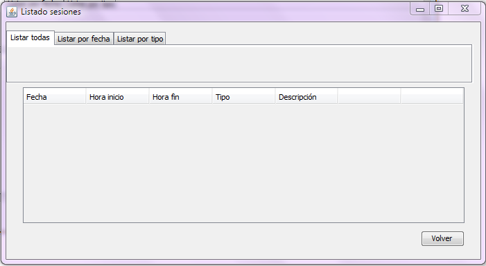

Listado de Sesiones
En esta ventana se permitirá ver los datos de cada sesión.
Las acciones que se podrán realizar en esta ventana son las siguientes:
Los pasos que hay que realizar son:
- 1.)En el JTabbedPane elegimos entre Todos, Rango de fechas, Fecha, Tipo.
- 2.)Se pulsa en el botón "Ver;" para que se consulten todos los datos guardados.
- Dar de baja una sesión: Pulsar en el botón "Borrar"en cada fila de la tabla.
- Editar una sesión: Se pulsa en el botón "Editar",en cada fila de la tabla, se abrirá una ventana con los datos ya introducidos, lo que hay que hacer es cambiar el dato o los datos que se deseen.
Volver al menú principal: Se volverán al menú principal del programa. Ver Menú Principal
